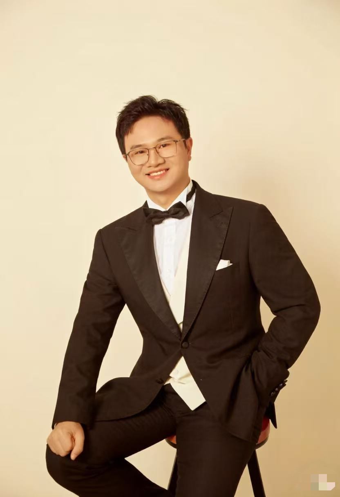

Algebraic Geometry · Derived Categories
Xun Lin
Postdoctoral Fellow in Mathematics at the Hong Kong University of Science and Technology. Incoming Assistant Professor in Mathematics at The Chinese University of Hong Kong, Shenzhen from September 2026.
I work in algebraic geometry, with particular interests in derived categories, GLSM models, Hochschild–Serre algebras of smooth proper dg categories, Hodge theory, Hitchin fibrations, and categorical Torelli problems.
Appointments and education
- Incoming Assistant Professor in Mathematics, The Chinese University of Hong Kong, Shenzhen.
- Postdoctoral Fellow in Mathematics, Hong Kong University of Science and Technology.
- Postdoctoral researcher at the Max Planck Institute for Mathematics, Bonn, mentored by Daniel Huybrechts.
- Ph.D. in Mathematics, Yau Mathematical Sciences Center, Tsinghua University. Doctoral supervisor: William Donovan.
- Undergraduate studies in Mathematics, Southern University of Science and Technology, Shenzhen.
Research
Research
My research lies in algebraic geometry. I am interested in the geometry of derived categories and GLSM models, Hochschild–Serre algebras of smooth proper dg categories, Hodge theory of algebraic varieties, and Hitchin fibrations.
Current projects concern categorical Torelli problems, categorical Hitchin fibrations, and Torelli problems for hypersurfaces in projective space.
Publications
Published and forthcoming workPreprints
Recent manuscriptsWorks in progress
Ongoing collaborations-
Higgs objects over noncommutative varieties.
-
Categorical Torelli theorem for Verra threefolds and fourfolds.
-
Singular categories: Hodge theory and (birational) categorical Torelli theorem for nodal Fano threefolds.
Notes
Notes
Teaching
Teaching
Instructor
- HKUST · 2025–26 Spring Foundation of Mathematics Course notes
Teaching assistant
- General TopologyTsinghua University
- Mathematical Analysis IITsinghua University
- Functional Analysis ITsinghua University
- Calculus ATsinghua University
- Algebraic Geometry ITsinghua University
Academic activities
Selected talks
-
Infinitesimal Torelli for special Gushel–Mukai threefoldsAlgebraic Geometry Seminar, Sun Yat-sen University, Guangzhou, China.
-
IVHS via Kuznetsov components and categorical Torelli theorems for weighted hypersurfacesSeminar on Algebraic Geometry, University of Bonn, Germany.
-
Categorical Torelli for smooth hypersurfacesAlgebraic Geometry Seminar, Southern University of Science and Technology, Shenzhen, China.
-
Infinitesimal categorical Torelli: an application to Kuznetsov’s Fano threefold conjectureOberseminar, Max Planck Institute for Mathematics, Bonn, Germany.
-
A generalized Bondal–Orlov reconstruction theorem for fully faithful embeddingsFive-minute talk, Junior Trimester Program, Hausdorff Center for Mathematics, Bonn, Germany.
-
A new proof of Torelli for cubic fourfoldsSeminar on Advanced Topics in Algebra and Geometry, Tsinghua University, Beijing, China.
-
Infinitesimal categorical TorelliGeometric Representation Theory Seminar, Tsinghua University, Beijing, China.
-
Hodge theory of combinatorics: an introductionTsinghua Preprint Seminar, Tsinghua University, Beijing, China.
-
Categorical TorelliTsinghua Preprint Seminar, Tsinghua University, Beijing, China.
-
Indecomposability of the bounded derived categories of Brill–Noether varietiesOnline poster session, VBAC Seminar, University of Warwick.
-
Nonexistence of semiorthogonal decompositions and sections of paracanonical systemsAlgebraic Geometry Seminar, Stony Brook University, USA.
-
Nonexistence of semiorthogonal decompositions and sections of paracanonical systemsAlgebraic Geometry Seminar, Cornell University, USA.
-
Nonexistence of semiorthogonal decompositions and sections of paracanonical systemsGeometry and Topology Seminar, Southern University of Science and Technology, Shenzhen, China.
-
VGIT and derived categoriesStudent Seminar, Tsinghua University, Beijing, China.
-
Nonexistence of semiorthogonal decompositions and the base locus of paracanonical systemsTata Institute of Fundamental Research, India.
-
Derived categories of symmetric products of curvesInternal Seminar, University of Edinburgh, UK.
-
Noncommutative Hodge conjectureGeometric Representation Theory Seminar, Tsinghua University, Beijing, China.
-
Noncommutative Hodge conjectureSouthern University of Science and Technology, Shenzhen, China.
-
Noncommutative Hodge conjectureShanghaiTech University, Shanghai, China.
-
Examples of Shimura varietiesStudent Algebraic Geometry Seminar, Tsinghua University, Beijing, China.
-
Derived Torelli for K3 surfacesStudent Algebraic Geometry Seminar, Tsinghua University, Beijing, China.
-
Nonexistence of semiorthogonal decompositions and sections of the canonical bundleStudent Algebraic Geometry Seminar, Tsinghua University, Beijing, China.
-
Geometry of moduli spaces of sheaves on surfacesStudent Algebraic Geometry Seminar, Tsinghua University, Beijing, China.
Academic activities
Visits and workshops
-
Workshop on Moduli Spaces in Various Flavors of GeometryKyoto University, Kyoto, Japan.
-
Workshop on Derived CategoriesYonsei University, Seoul, Korea.
-
Research visitSouthern University of Science and Technology, Shenzhen, China.
-
Research visitMorningside Center of Mathematics, Chinese Academy of Sciences, Beijing, China.
-
Research visitYau Mathematical Sciences Center, Tsinghua University, Beijing, China.
-
Research visitShanghai Center for Mathematical Sciences, Fudan University, Shanghai, China.
-
Research visitStockholm University, Sweden.
-
Research visitUniversity of Genoa, Italy.
-
Research visitUniversity of Oslo, Norway.
-
Junior Trimester ProgramHausdorff Center for Mathematics, Bonn, Germany.
-
Research visitSichuan University, Chengdu, China.
-
Research visitTsinghua University, Beijing, China.
-
Research visitCornell University, USA.
-
Research visitShanghaiTech University, Shanghai, China.
-
Geometry of Derived CategoriesUniversity of Liverpool, UK.
-
Derived Categories SeminarSun Yat-sen University, Guangzhou, China.
-
Algebraic Geometry for Young ScholarsUniversity of Science and Technology of China, Hefei, China.
Links
Student seminar at Tsinghua University, Fall 2022: Preprint Seminar.